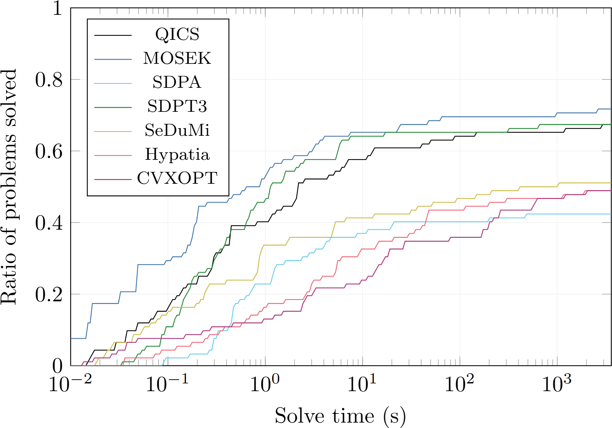
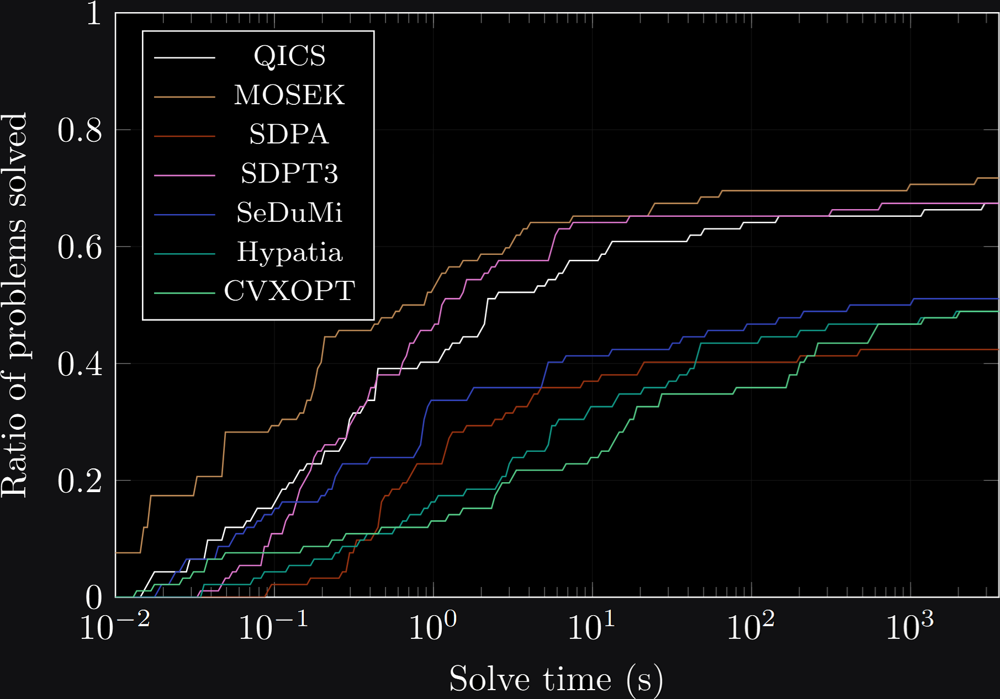
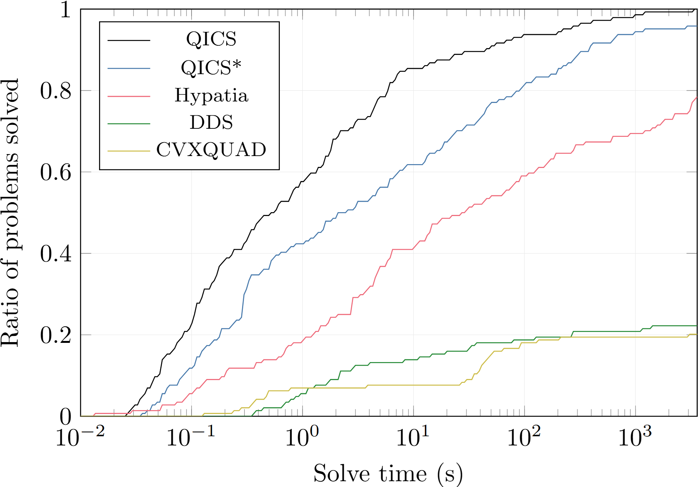
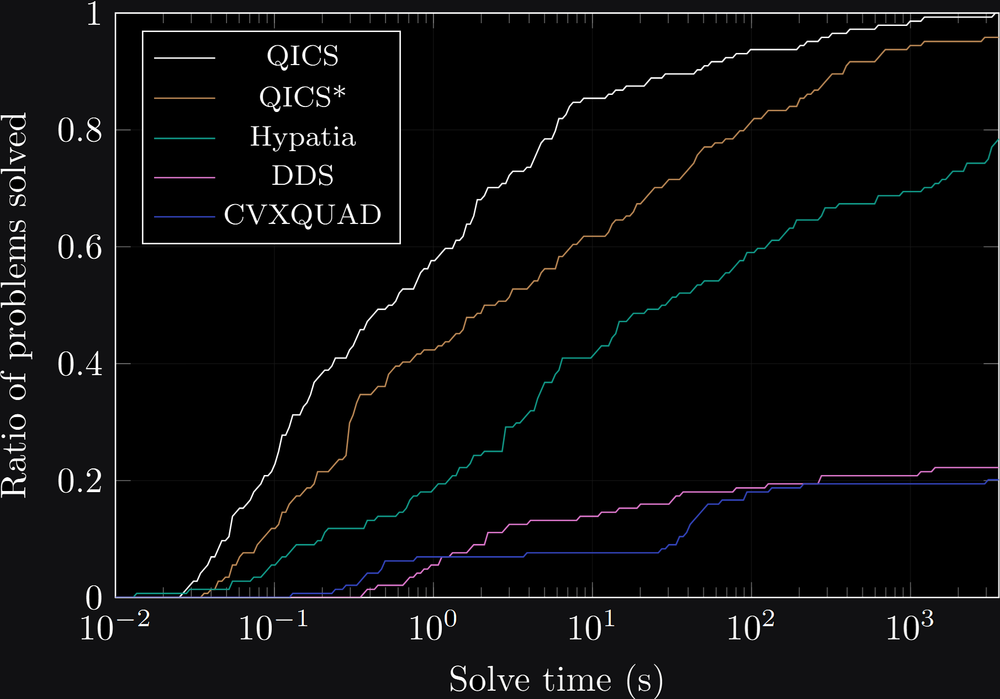

Features
Quantum entropy programming
Supports quantum relative entropies, (sandwiched) Rényi entropies, matrix geometric means, and more.
Semidefinite programming
Achieves comparable performance to state-of-the-art semidefinite programming software.
Complex-valued matrices
Hermitian matrices are directly supported without needing to reformulate the problem.
Performance
QICS demonstrates comparable performance to state-of-the-art semidefinite programming software, and superior performance to existing quantum relative entropy programming software. See our paper for additional details.
Semidefinite programming


Comparison of relative performance ratios and solution time profiles of various semidefinite programming solvers to solve 92 problems from the SDPLIB benchmark library to full accuracy ε = 10-8 and to low accuracy ε = 10-5.
Quantum relative entropy programming


Comparison of relative performance ratios and solution time profiles of various solvers to solve 144 quantum relative entropy programs to full accuracy ε = 10-8 and to low accuracy ε = 10-5. Note that QICS refers to results using the full suite of cones we implement, whereas QICS* refers to results using only the quantum entropy and quantum relative entropy cones.